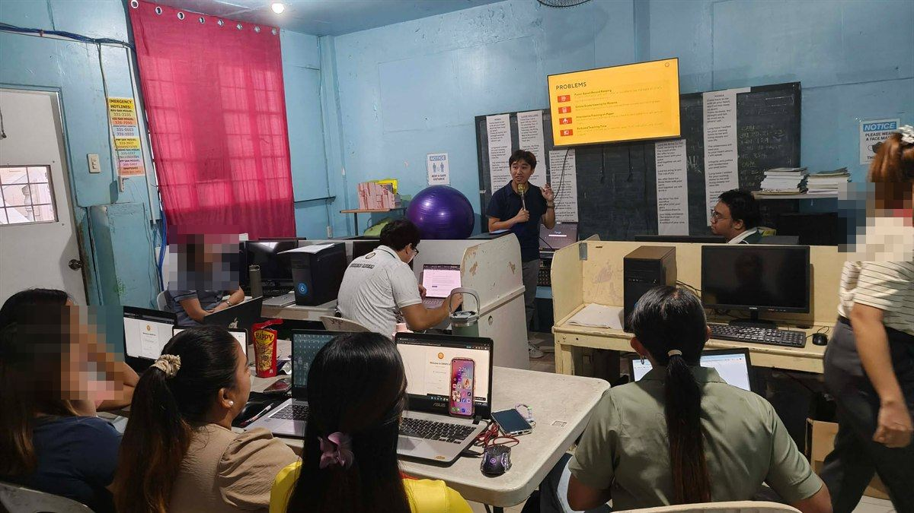

Reinforcements
Then the others came.
At the start, there were only two of us. Our program asked for six hundred hours, so we began early, before the rest, in a quiet room with a borrowed machine.
Then two friends came along. They studied a different course, but they showed up anyway. Four sets of hands move faster than two. The work that had been crawling began to run.

We stood in front of the teachers and showed them what we had built. Where the paper used to pile up, a screen now waited.

The teachers were smiling. So were we.